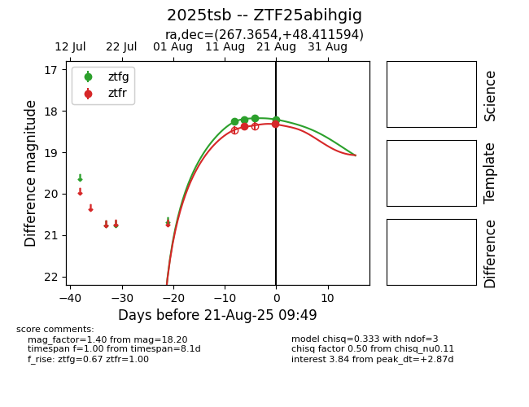

Target 2025tsb at 2025-08-21 09:49, see:
FINK: fink-portal.org/ZTF25abihgig
Lasair: lasair-ztf.lsst.ac.uk/objects/ZTF25abihgig
ALeRCE: alerce.online/object/ZTF25abihgig
TNS: wis-tns.org/object/2025tsb
YSE: ziggy.ucolick.org/yse/transient_detail/2025tsb
alt names
ZTF25abihgig (ztf,alerce)
2025tsb (tns,yse)
coordinates:
equatorial (ra, dec) = (267.3654,+48.41159)
galactic (l, b) = (75.3668,+29.92443)
photometry
last ztfg=18.20, ztfr=18.32
4 ztfg, 2 ztfr detections
